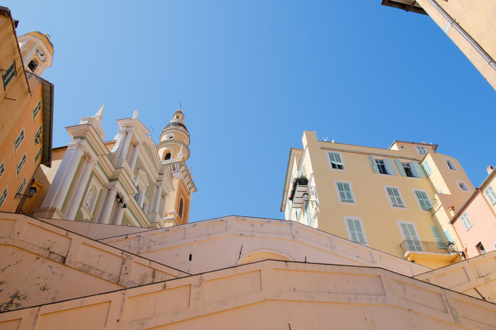
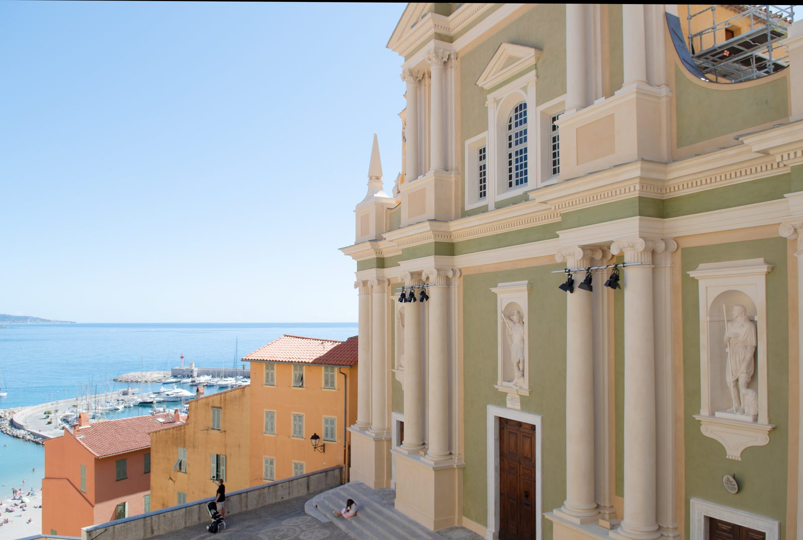
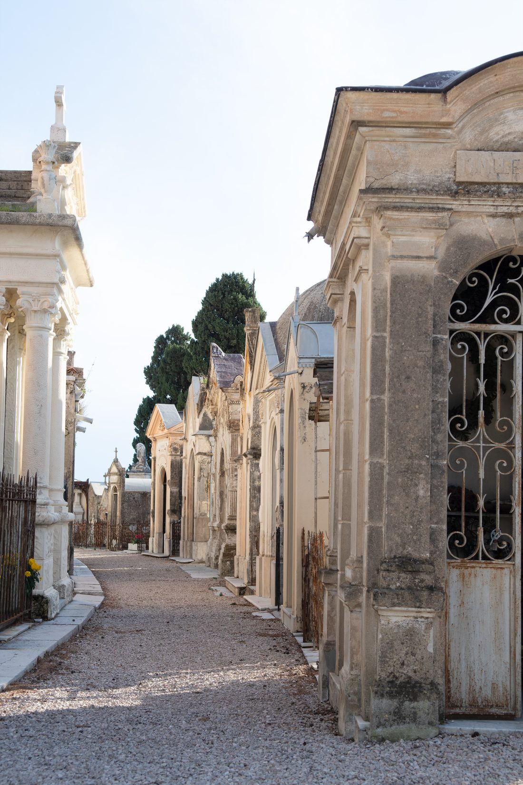
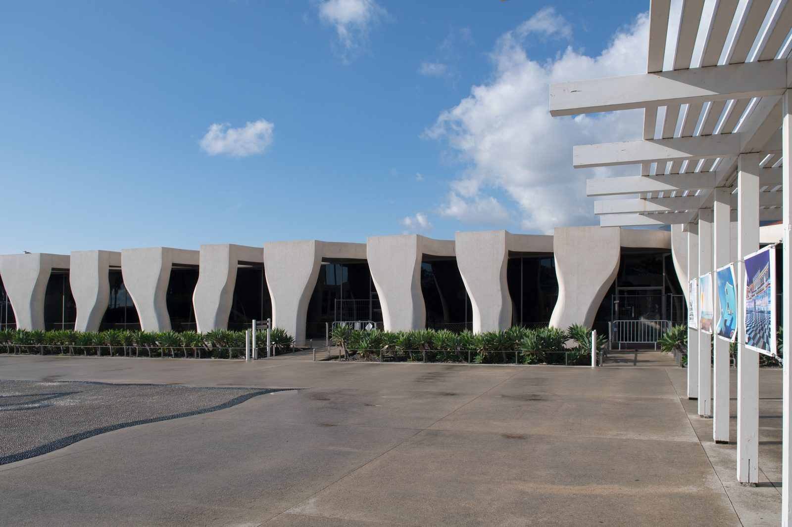
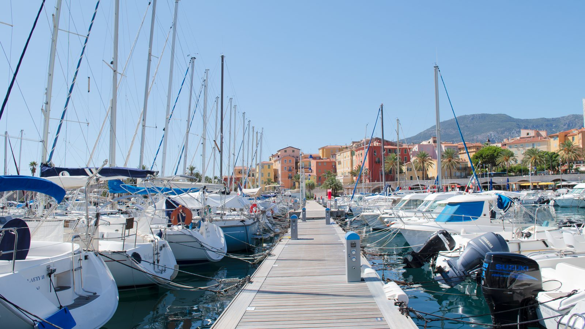
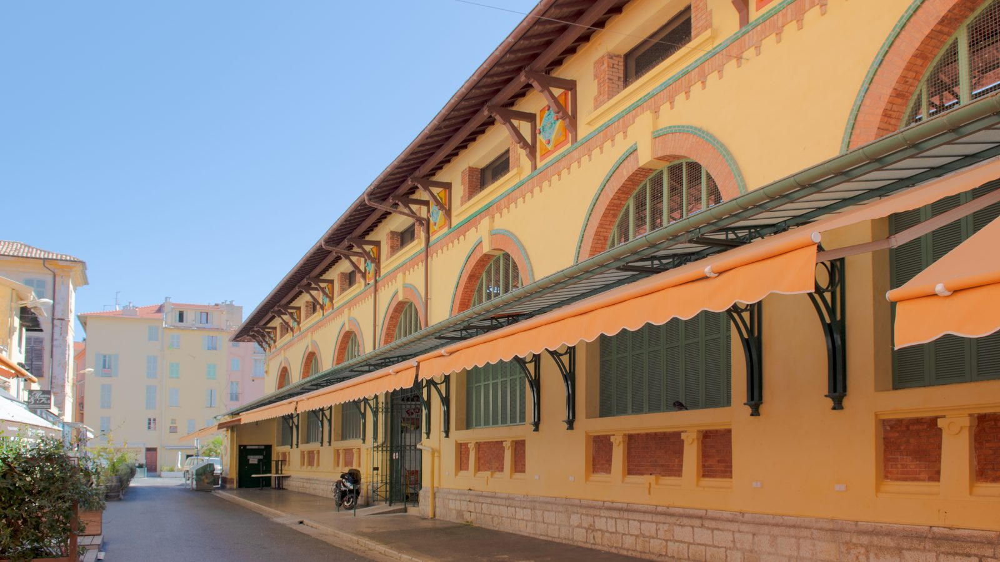
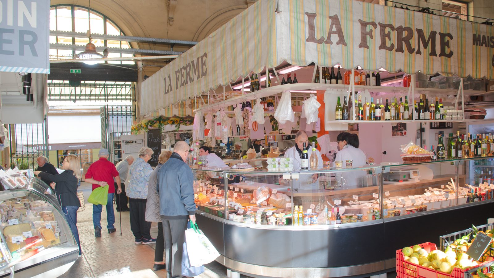

Monaco Made Easy · Guides pour les visiteurs
Menton et ses villages perchés
Menton est en France, dernière ville de la côte avant l’Italie, sans contrôle à la frontière depuis Monaco. On y trouve une vieille ville colorée qui grimpe depuis le port, de longues plages, des jardins célèbres et des villages médiévaux dans les montagnes.
Comment y aller depuis Monaco
Les trains depuis la gare de Monaco Monte-Carlo rejoignent Menton en une dizaine de minutes. L’arrêt suivant, Menton-Garavan, est plus proche de l’est de la vieille ville, du port et de la frontière italienne. Le bus 600 du littoral relie aussi Monaco à Menton, plus lentement.
Les taxis de Menton sont des taxis français. Ils peuvent vous conduire à Monaco, mais les taxis monégasques ne peuvent pas vous prendre à Menton, ni les taxis mentonnais à Monaco. Les principales stations sont devant la gare de Menton, près du Casino et à la mairie.
La vieille ville et la basilique
Des ruelles colorées et des escaliers grimpent du port jusqu’à la basilique Saint-Michel-Archange, baroque, avec vue sur la mer. C’est superbe, mais raide et en escaliers : pas adapté aux fauteuils roulants ni aux poussettes.


Continuez à monter au-dessus de la basilique jusqu’au cimetière du Vieux-Château, sur l’emplacement de l’ancien château. Ses grands tombeaux du XIXe siècle sont ceux des hivernants britanniques, russes et autres qui ont fait la renommée de Menton, dont William Webb Ellis, à qui l’on attribue l’invention du rugby. C’est aussi la plus belle vue sur la ville : la photo en haut de cette page a été prise là. Le cimetière est toujours en activité ; merci d’y rester discret et respectueux.

Musées et jardins
- Musée Jean Cocteau, collection Séverin Wunderman : l’étonnant bâtiment blanc de Rudy Ricciotti, en bord de mer, est fermé depuis la tempête de 2018. Une partie de la collection est présentée à la Galerie des Musées, au Palais de l’Europe, près des jardins Biovès.
- Musée Jean Cocteau, Le Bastion : le petit musée voulu par Cocteau, dans un fort du XVIIe siècle sur le port.
- Palais Carnolès : l’ancienne résidence d’été des princes de Monaco, aujourd’hui musée des beaux-arts, avec un jardin d’agrumes.
- Les jardins Biovès au centre, et le jardin botanique du Val Rahmeh à Garavan, plein de plantes tropicales.


Les Halles, le marché couvert
Le marché couvert de Menton occupe une halle Belle Époque colorée au pied de la vieille ville, à deux pas de la plage. Venez le matin pour les fromages, les olives, la charcuterie et les fameux citrons de Menton.


La Fête du Citron
Chaque février, la Fête du Citron remplit les jardins Biovès de sculptures géantes en citrons et oranges. En 2027, elle a lieu du 13 au 28 février, avec les corsos sur la Promenade du Soleil les dimanches après-midi (14, 21 et 28 février). Les trains pour Menton sont bondés les jours de corso.
Mirazur
Le restaurant de Mauro Colagreco, près de la frontière italienne, a trois étoiles Michelin. Réservez longtemps à l’avance.
Les villages au-dessus de Menton
Les bus Zest de Menton partent de la gare routière, à côté de la gare SNCF : ligne 10 pour Sainte-Agnès, l’un des plus hauts villages littoraux d’Europe, à environ 780 m (environ 35 minutes), ligne 5 pour Gorbio et ligne 6 pour Castellar (environ 30 à 35 minutes chacun). Ils ne passent que quelques fois par jour : vérifiez les horaires avant de partir.
Dans l’application, vous trouverez la carte de Menton, les itinéraires à pied, les hôtels, les restaurants, les toilettes, les pharmacies et les distributeurs, ainsi que les villages et comment y monter.